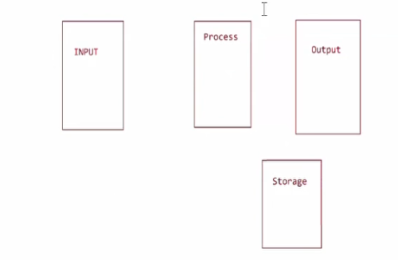
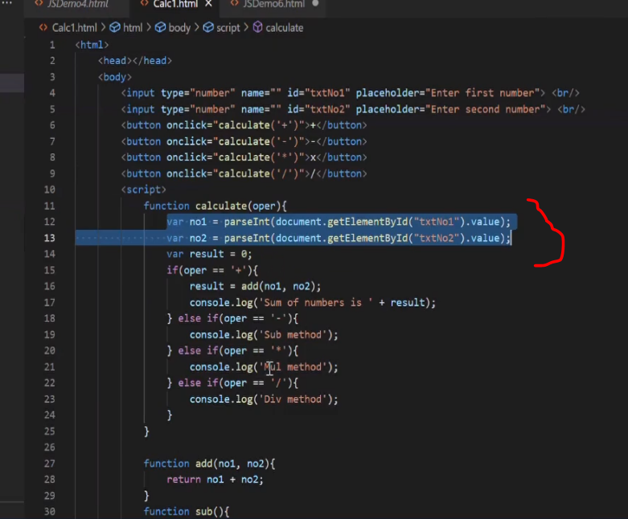
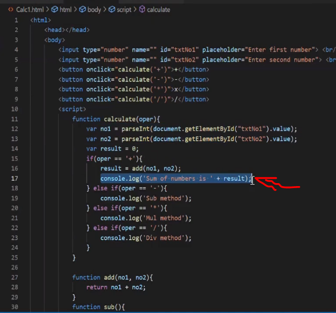
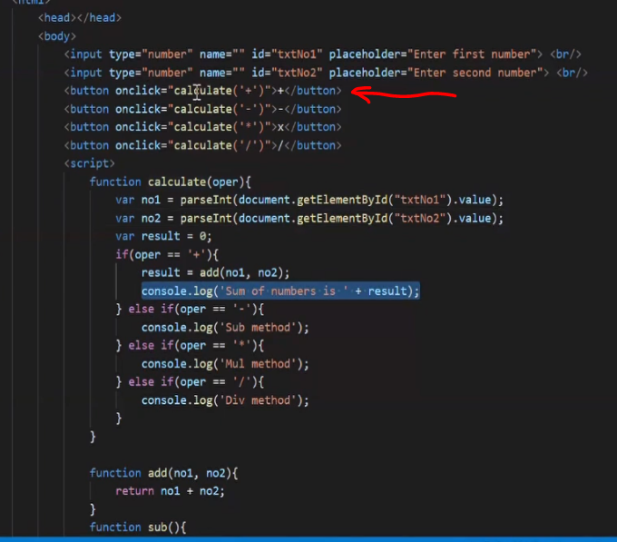
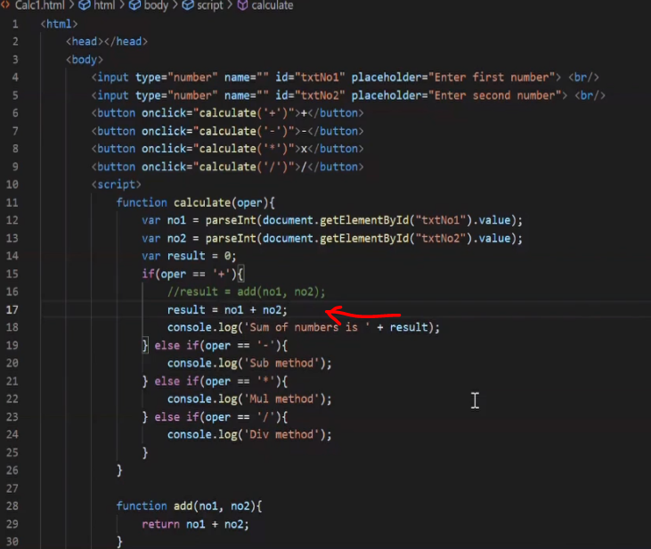
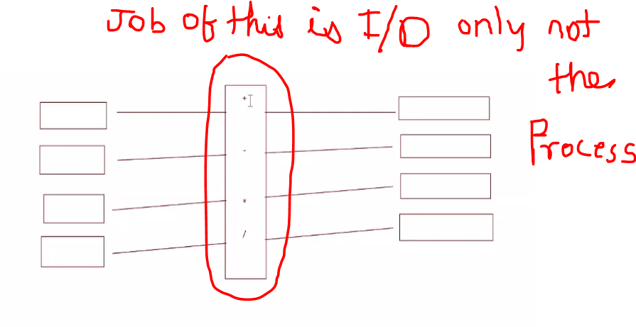
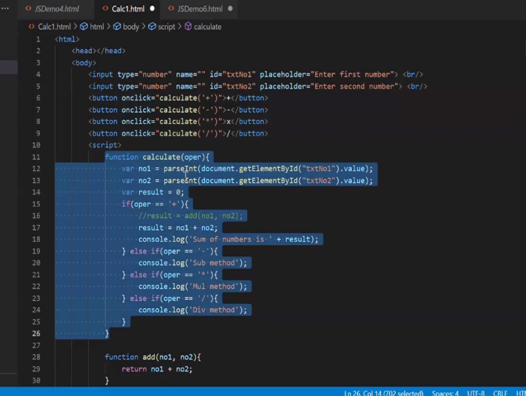

my functions job is to read the data from the screen
imagine that user has already entered the number and the number is 10 and 20
var no1 = 10;
var no2 = 20;
now you have to understand 1 thing very carefully how the functions will work
whenever you write a particular function we will have 3 parts in it
1.return type
2nd function name
3rd parameter
its not compultion to have parameter
if my function wont return any thing so ill say void ----------void fun(){}
and to call this function i write-------------fun1();
any thing to the caller it means i am calling this function and this function is not writtening
anything
its like you are giving 10 rs to a children and saying go eat something but yaha aap 10rs bhi nahi de
rahe
ho
you are just saying to the kid ki go have choclate
so what that particuar guy will do he will buy the choclate or eat some thing or dont do anything its
his
job
nor this guy will comeback and tell to you anything nor you are bothered about that guy
so nither you are passing any parameter to this function nor this function is bothered to returning to
you
you are just calling the function and he is performing his job
now suppose there is diwali and you are giving 10 rs to that child------------ fun2(10);
and you will say go have choclate
now when you are giving 10s to kid so needs to have pocket to take money and keep it
what he does he keep this in pocket no1 -----------void fun2(int no1){}
no1 is the pocket where the 10 will be pushed now by saying void you are not expecting to that child ki
come back to you
and say what he had done with that 10rs you just give the value and you are not bothered and this
child
will do what ever he wantsto do with that money
now we have fun3----------int fun3(int no1){ return no1+20; }
what my fun3 does is it will take the aurgument ---it is taking number 1 and it is performing some
operation with no1
and he is returning some value------- may be you call some kid and give 10 rs to him and say go have
fun
so he already has 20rs with him so he take whatever the money you are giving he add 20rs to it
he is comming back to you and giving that to you
now when he is comming back and giving that to you so obviously you should have the value(pocket) to
store
that return value
------------int funValue = fun3(10);
so here my function is called with parameter and it is returning something so i should have a
placeholder
store that value
now pls understand one very important thing
any program you write it would be it would be most simplest ,silliest program like adding of two numbers or may be to print hellow followsed by the name of the user
any program you write will have 3 parts in it
1 is Input
2nd will be the Process
3rd will be the Output
IPO--input process output
input will come from the user
output is to the user
process is for us
for example- I am asking a user to enter 2 numbers so that becomes a input so he will put 1st number and 2nd number
when user clicks on + button we need to do sum thats the process
after the process the result what i am having i have to give it back to the user that becomes the output
input and output we already have seen using html and css
now today what we dealing is process related code so java script
so in the java script what we do we read the data we will process that particular data and gives the output
but in some cases we need to add an extra layer here we may have to go with the storage -------------IPOS
meaning i am trying to store the data i have the processed data, the input data or the output data i ll take that processed data and store that data
It can be using file handeling , it can be using Database
once you store that particular data will pe permanently there
it will be persisted and it will use the persisted data may be in later stages
Nowcomming back here to the question why can't we pass this particular value
if i return this calculated value
who is the caller who is calling this calculate method
here who is calling my fun1()---------main is calling
similarly if i write return here so who is calling calculate method
this button is calling na ---onclick() is a event handler is'nt it so my this particular event will get calculate return here so where will you write the code to print the sum on the screen as output
one more question
why are you calling one more funtion can't we directly write result=no1 + no2 here
like i know this is a + symbol so instead of writing one more function passing parameter to it then return the result so i can directly write na result=no1 + no2
we ca do this but it is not recommended because the job of my function is to controll the input and output
just like when you go to hotel and in the hotel you have the server guy he will come and say mam sir please tell me what you want to have and you pic from the list and say i want to eat this then he go to that particular place and place order then chef will process the food and give to the server guy so he take the food and come and serve you
will the server guy go to kitchen and will he prepare -------no that will never happen na
this is Called SRP------Single Responsible Principle
so what is the job of this calculator ---it use to take the operator based on operator it will not sit and calculate it is not the job of this guy he is like a supplier